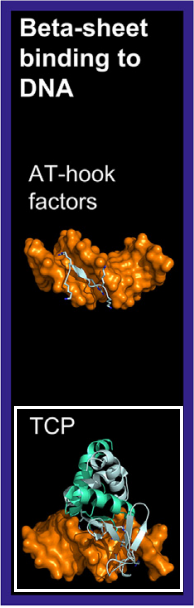

The TCP (TEOSINTE BRANCHED1, CYCLOIDEA, PROLIFERATING CELL FACTORS) family is specific to land plants. Initially,
TCP factors were thought to resemble basic helix-loop-helix (bHLH) or Ribbon-Helix-Helix (RHH) factors.
[src],
Recent crystallographic studies of TCP–DNA complexes (PDB: 7VP2) revealed a novel DNA-binding domain fold.
TCP homodimers bind DNA primarily through antiparallel beta-strands at the dimer interface, with two flexible
loops at the N-terminal side of each monomer contributing to DNA binding
[src]
[src].
This unique structure justifies the inclusion of TCP factors
in the beta-sheet binding to DNA superclass.
